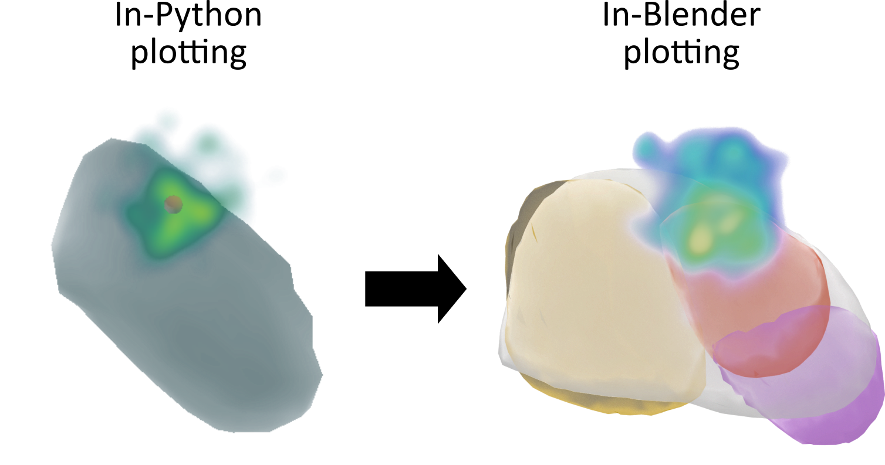
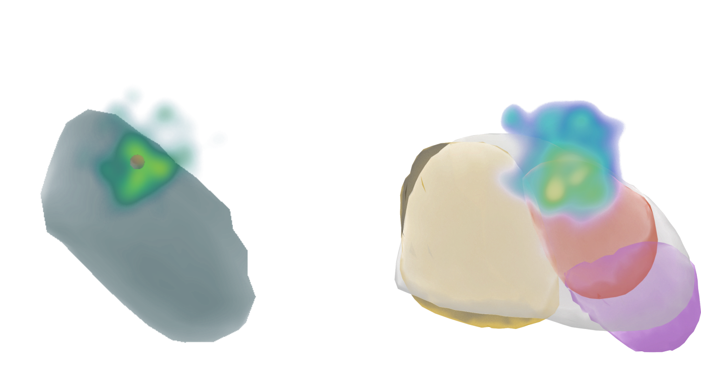

Volumetric Data#
This guide explains how to visualize volumetric data using FiNNpy.
{kind=link}

{kind=link}

In-Python plotting (left)#
Plotting routines may be imported as follows,
import finnpy.visualization.volumetric_plots as vp
From there, a figure has to be created,
fig = vp.create_figure()
and displayed as follows,
fig.show()
<or>
pv.show_figure(fig)
Several routines are provided to add data to the, as of now, empty plot.
Plot structures#
Structures may be added via
pv.add_structure(fig, path, name, opacity)
*.obj atlas structures can be extracted as follows (requires 3dslicer; https://www.slicer.org/)
import finnpy.visualization.atlas_nifti_to_obj as anto
anto.conv_ewert(MAT_PATH, NII_PATH, OBJ_PATH, SLICER_PATH)
In case of a permission error, such as below, it is likely that the script needs to be configured as executable.
PermissionError: [Errno 13] Permission denied: '[...]/slicer.sh'
Plot a volume/pointcloud#
Volumes/pointclouds may be added via
pv.add_volume(fig, pts, name, grid_step_cnt, max_filter_sz, gaussian_filter_sigma, opacity)
Points of a volume/pointcloud are projected into a mesh. The size of this mesh is defined by the respective minima/maxima across all axes. The resolution of the mesh can be manually defined. To compensate for potential sparsity from a high resolution, a max filter may be applied to increase the space a single point takes (disabled if max_filter_sz is zero). A Gaussian filter may be applied to smoothen the plot (disabled if gaussian_filter_sigma is zero).
Plot a add_polygon#
Polygons may be added via
add_polygon(fig, pts, faces, name, opacity)
Black background#
The background may be set to black via
set_black_background(fig)
Add axes#
Axes may be added via
add_axes(fig)
In-Blender plotting (right)#
To export a figure into blender, it needs to be fully populated (i.e. volumes and other elements added), but not yet displayed, as this clears the figure upon closing.
The following additional software is required for this step:
Blender
FiNNpy’s vti to vtb converter (only for volumes)
How to compile the vti to vtb converter library is explained in Exporting Volumetric Plots to Blender.
The export may be performed via
export_to_blender(structs, volumes, vti_vtb_converter, path = None)
This function iterates through all provides structures and volumes, creating a blender-readable file for each. Subsequently, this may be imported into blender.